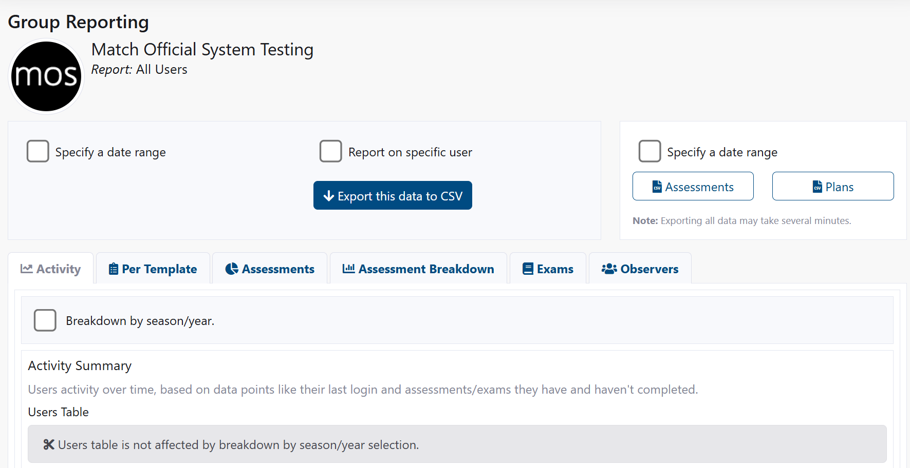

Group Reporting
Warning
Reviewer access required - Reviewer or Owner role
Overview

Group Reporting provides interactive dashboards and exports covering login activity, assessment volumes and outcomes, template-level metrics, exam performance, and observer engagement. Use date and subgroup filters to focus on specific cohorts and timeframes.
How to Access
- Sidebar: Group Reporting.
Filters and Exports
Date Range
- Tick Specify a date range to enable.
- Set Start and End dates; click Refresh.
Subgroup and Role Filters
- Filter by Subgroup to isolate a team/region.
- Filter by Role to see activity for users with specific roles.
User Filter (Charts)
- Tick Report on specific user and choose a user from the dropdown.
- Click Refresh (if needed) to update charts.
Export This Data to CSV (Charts)
- Click Export this data to CSV to download the current tab's dataset.
- CSV opens in Excel/Sheets for deeper analysis.
Raw Data Export (Owner Only)
- Optionally tick Specify a date range for export.
- Enter Start and End dates (export range).
- Click Assessments or Plans to export raw CSV data.
- Note: Exporting all data may take several minutes.
Tip
Use the User filter to focus on one member's activity. Keep chart date range aligned with your export window when comparing.
Reports and Tabs
Activity
- Logins Over Time: Line chart of daily/weekly logins.
- Active Users: Count of distinct users active in range.
- Return Rate: Users with multiple sessions vs. one-offs.
- Last Login Table: Who signed in and when, including inactivity streaks.
Use this tab to monitor adoption and identify members who may need reminders or support.
Per Template
Focus on template-specific performance (e.g., Diary, Match Day, Season):
- Average Score: Mean rating per template in range.
- Completion Rate: Completed vs. assigned.
- Distribution: Histogram of ratings to spot skew/heaping.
- Time to Complete: Median/average days from assignment to completion.
Filters:
- Template type, assessor, subject, subgroup.
Assessments
- Volume: Created/Submitted/Published counts.
- Status Breakdown: Draft, In Review, Submitted, Published, Archived.
- Completion Trend: Weekly completions vs. prior period.
- Top Assessors/Subjects: Activity leaders.
Use this to clear backlogs and track throughput.
Assessment Breakdown
Granular view into rubric categories across assessments:
- Per-Category Averages: Identify strengths and gaps.
- Variance: Spot inconsistent scoring.
- Outliers: High/low scores for review or calibration.
Export for calibration sessions and training needs analysis.
Exams
- Attempts: Number of users who started/completed.
- Pass Rate: Pass/fail and average score.
- Question Analysis: Most-missed questions and distractors (if available).
- Cohort Comparison: By subgroup or role.
Drill into a specific exam via Admin: Exam Management.
Observers
- Engagement: Number of reviews submitted per observer.
- Timeliness: Average time to submit after event.
- Coverage: Distribution across subgroups/events.
Use to support workload balancing and recognition.
Common Tasks
Export Group Assessments (Raw CSV)
- Click Group Reporting.
- In Raw Data Export, tick Specify a date range (optional) and set dates.
- Click Assessments.
- Open the downloaded CSV in Excel or Sheets.
Report on a Specific User
- Click Group Reporting.
- Tick Report on specific user and select the User.
- Adjust the Specify a date range if needed.
- Review the charts and click Export this data to CSV to download.
Compare Templates Across Seasons
- Click Group Reporting.
- Open Per Template; select type and Template.
- Tick Breakdown by season/year (if available).
- Review changes across seasons.
Filter by Subgroup
- Click Group Reporting.
- In Subgroup and Role Filters, select a Subgroup.
- Click Refresh to update all charts.
Troubleshooting
No data displayed
- Expand the date range or remove the user filter.
- Click Refresh after changing filters.
- Verify subgroup has active members with data in the selected period.
Export takes too long
- Reduce the export date range.
- Export Assessments and Plans separately.
Observers tab is empty
- Confirm your group has members with admin rights above Viewer.
- Ensure reviewers have submitted assessments in the date range.
Charts show unexpected results
- Check the date range and subgroup filters; try broader criteria.
- Ensure source entities exist and are within the selected range.
- Confirm publishing status (draft assessments may not appear).
Tips and Best Practices
- ✅ Save filter presets (if supported) for recurring reporting periods.
- ✅ Export monthly and archive CSVs for audit trails.
- ✅ Review breakdown data for targeted coaching.
- ✅ Use subgroup filters to benchmark performance across regions or levels.
Related Pages
- Reporting (User) - Basic reporting for all users
- Assessments - Create and manage assessments
- Exam Management - Configure exams
- User Management - Manage group members
- Levels of Access - Roles and reporting permissions